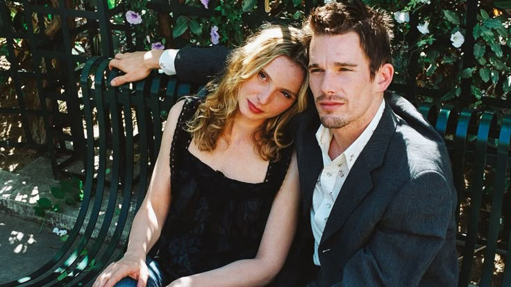
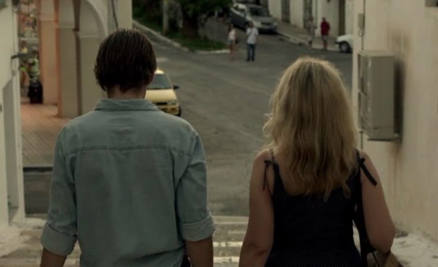

Dois jovens estrangeiros se conhecem em um trem na Europa e decidem passar uma noite inesquecível juntos pelas ruas de Viena.

Nove anos após o primeiro encontro, Jesse e Celine se reencontram em Paris e têm apenas algumas horas para conversar antes do voo de Jesse.
Agora casados e pais de gêmeas, o casal passa as férias na Grécia e reflete sobre os rumos, os desafios e a evolução do seu relacionamento.
Dirigida por Richard Linklater, esta aclamada trilogia acompanha a evolução do amor de Jesse e Celine ao longo de duas décadas. Gravados com intervalos reais de 9 anos, os filmes são baseados puramente em diálogos sinceros sobre a vida, o tempo e as conexões humanas.
Acompanhamos Jesse e Celine envelhecerem em tempo real. Com intervalos reais de 9 anos entre as produções, a trilogia captura com extrema sensibilidade as mudanças físicas, psicológicas e as dores do amadurecimento humano através das décadas.
Sem tramas complexas ou grandes reviravoltas, a narrativa é inteiramente conduzida por conversas profundas. Richard Linklater e os atores criaram roteiros impecáveis sobre amor, filosofia, conexões perdidas, medos e a própria passagem do tempo.
As cidades funcionam como terceiros personagens na história. Da atmosfera romântica e jovem das ruas de Viena, passando pelos charmosos cafés e livrarias de Paris, até chegar ao clima maduro, caloroso e reflexivo da costa da Grécia.
Viena, 1995. O início de tudo em uma noite que nunca deveria acabar.
Paris, 2004. Nove anos depois, o reencontro apaixonante em uma tarde curta.

Grécia, 2013. A realidade madura e os dilemas de um amor testado pelo tempo.